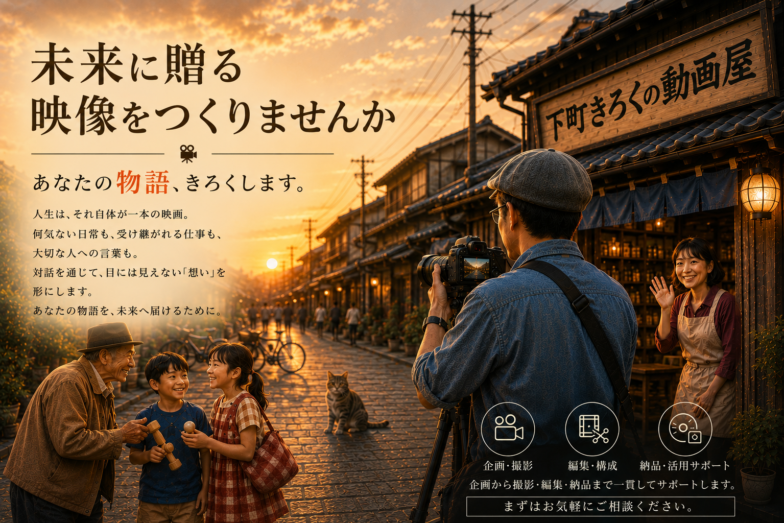
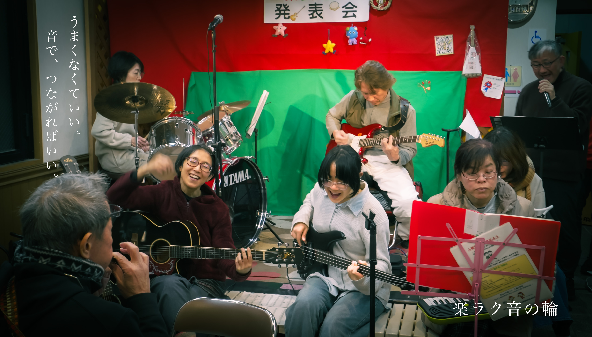
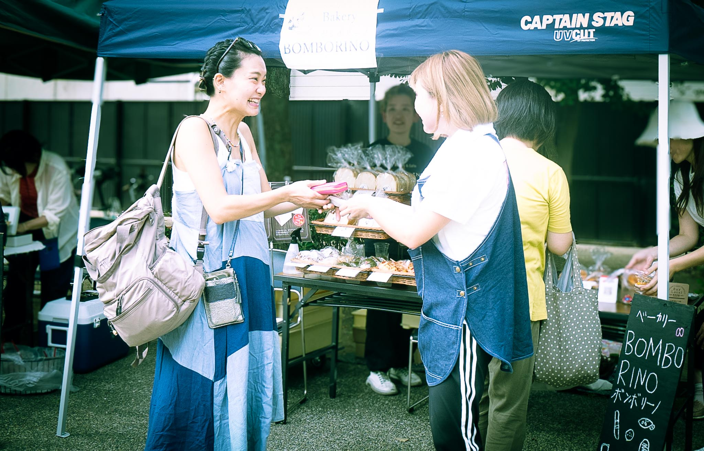
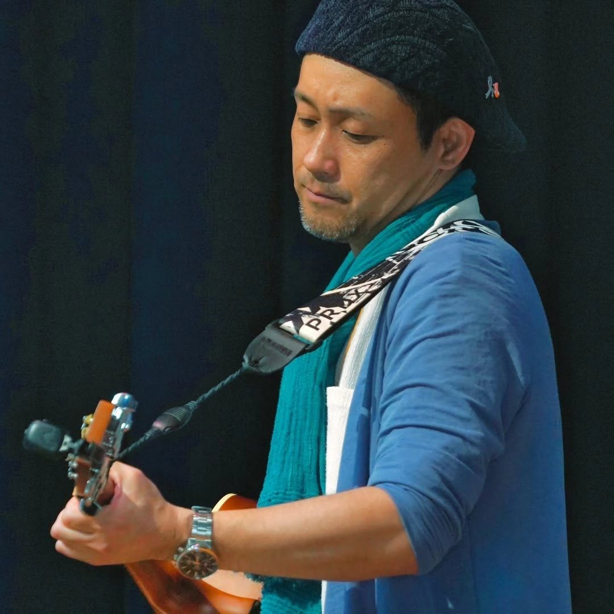
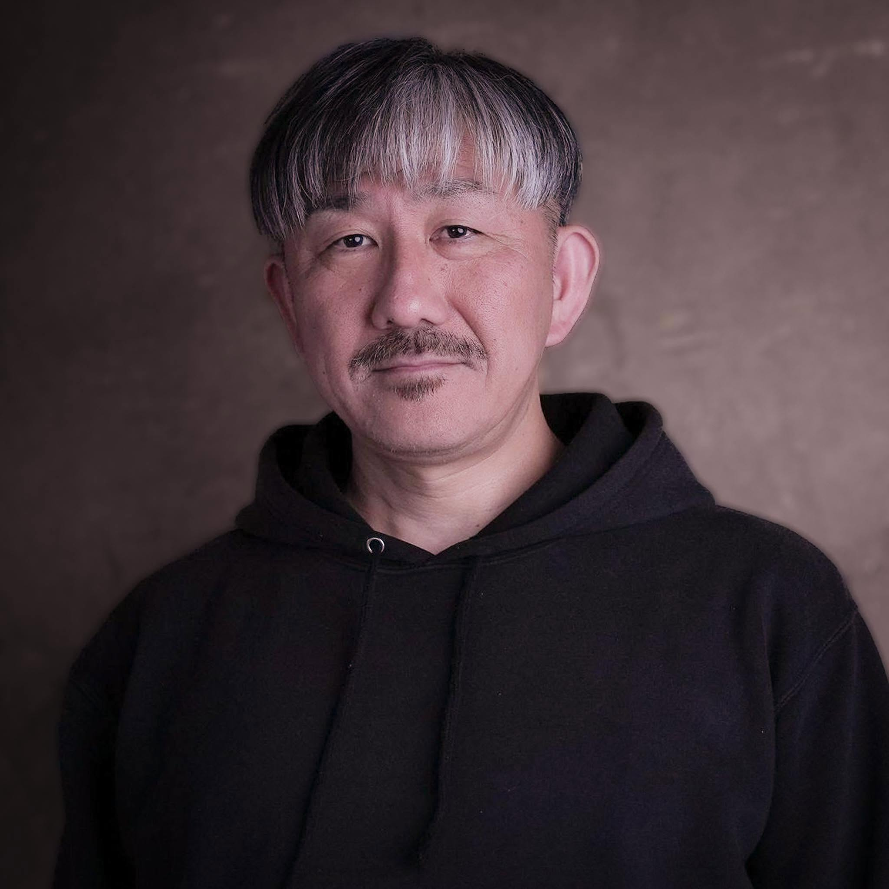
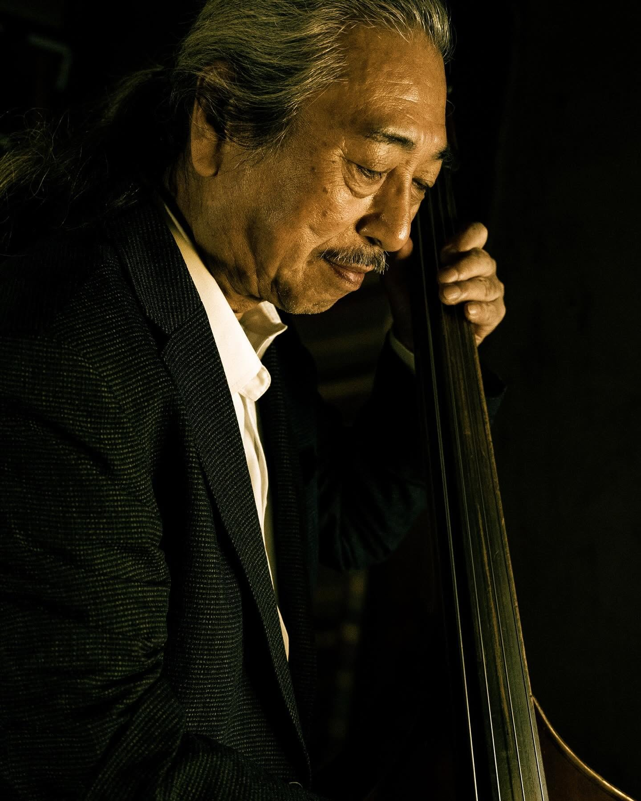
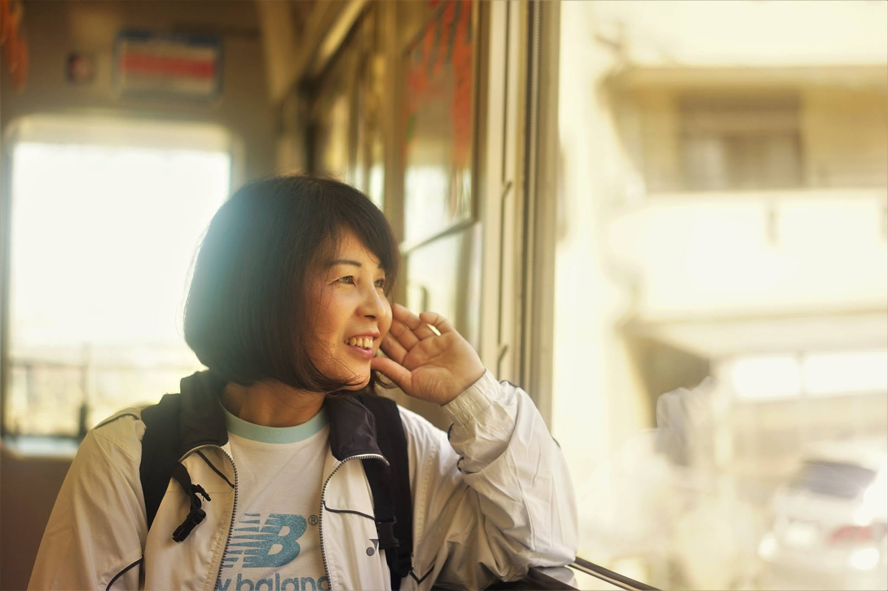
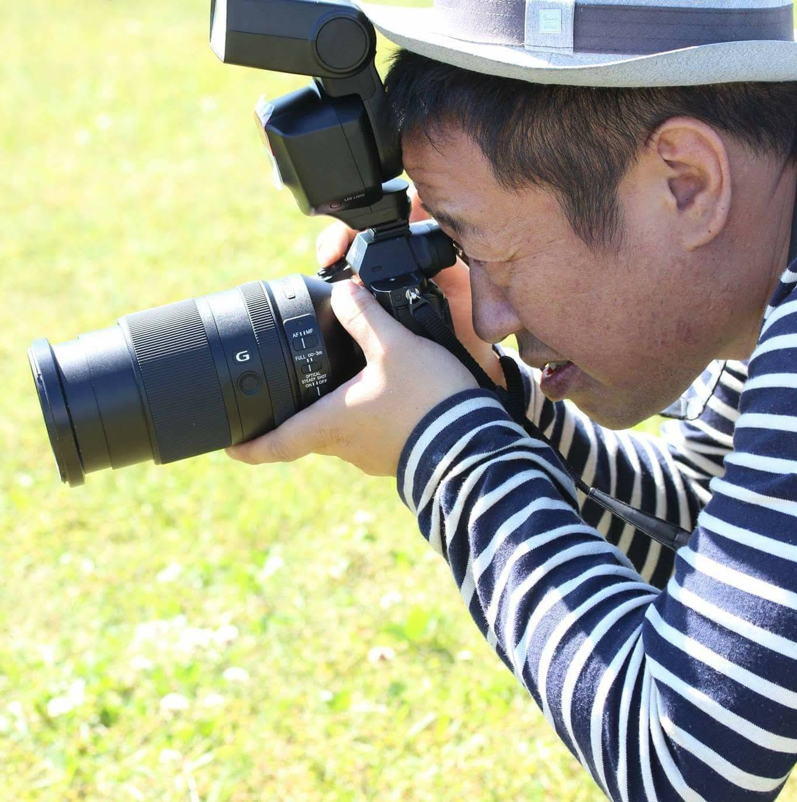

NEWS
ABOUT
10年後、20年後に見返したとき、その人の声や笑い方まで残っている。下町きろくの動画屋は、人生、お店、地域の物語を記録する映像屋です。
STORIES


VIDEO SERVICES
人生の節目から日常の記録まで、ご予算とご要望に合わせてご相談ください。
街のドキュメント制作
家族・お店・地域の物語を記録
イベント制作
お祭り・式典・演奏会など
あなたの記録
メッセージ映像・スマホ編集
イベント写真
お祭り・催し・お店の記録撮影
あなたらしいプロフィール写真
出張プロフィール写真・1分プロフィール動画
PORTRAIT PHOTO
その人が輝く場所へ。
仕事場、お店、活動の場、いつもの街。あなたが一番あなたらしくいられる場所へ出向いて撮影します。
ポーズを決めた写真だけではなく、仕事をする姿、夢中になる瞬間、人との関わりまで。
その人らしさと、その人の物語が伝わるプロフィール写真を。




① 出張プロフィール写真
あなたが一番あなたらしくいられる場所へ出向いて撮影します。
通常 10,000円
OPEN記念・30名限定
5,000円
② 1分プロフィール動画
仕事や活動の様子＋短いインタビューで、「今のあなた」を約1分の映像に。
通常 20,000円
10,000円
RECORDER

K.E
記録映像家
大阪・生野区を拠点に20年、街の姿を写真と映像に残してきました。
CONTACT
通常2〜3営業日以内にご返信いたします。